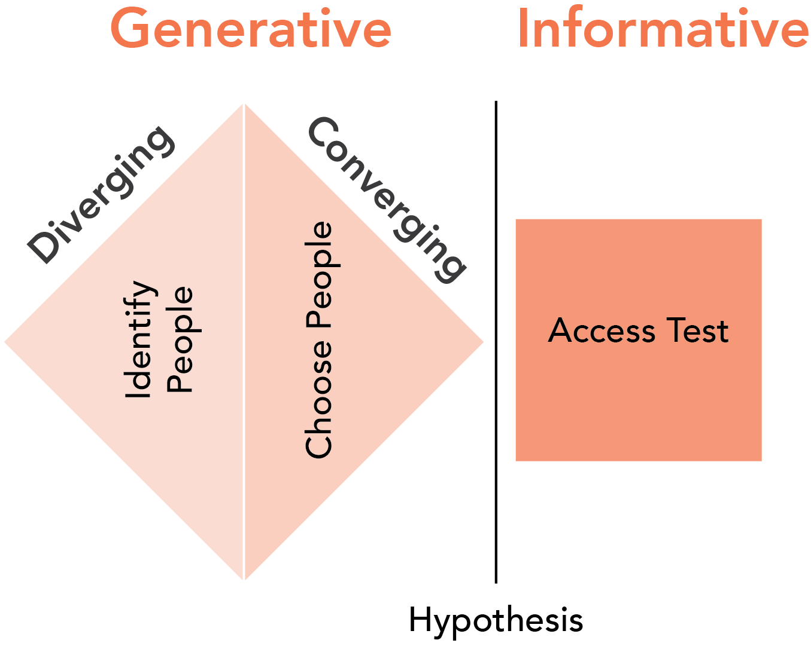
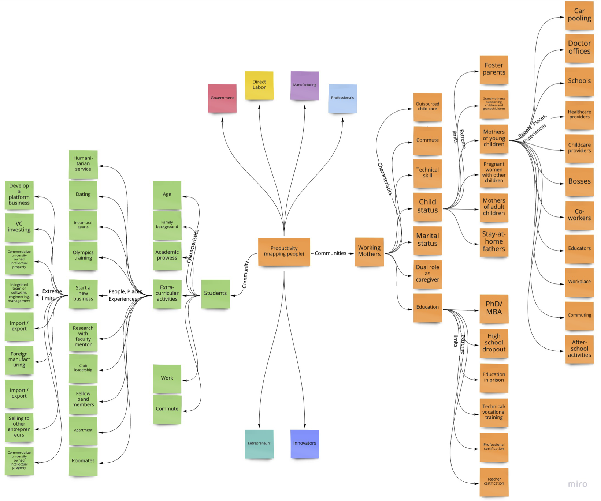

3 Choose Your People
Exploration and testing to focus on a community of people
3.1 Identifying People Who Need Innovation
Innovation often begins with a spark of creativity, a groundbreaking idea. However, the path to successful entrepreneurial innovation veers away from simply inventing solutions in search of problems. To enhance your chances of success, start not with a solution, or even a problem, but by identifying a community of people with unmet needs.
Entrepreneurial innovation thrives on uncovering these unmet needs and crafting solutions tailored to them. This approach significantly increases the likelihood of success, aligning the solution directly with an existing problem. It might seem counterintuitive, but beginning with the selection of a target community is a confident step forward. This strategy rests on the valid assumption that any group of people will harbor some unmet needs.
The market is rife with unaddressed needs, often overlooked or deemed unprofitable by existing players. These neglected needs, especially among non-mainstream or fringe customers, present a fertile ground for innovation.1 Fortunately for innovators but unfortunately for humanity, the pool of unmet needs is ever-expanding, fueled by evolving technologies and the perpetual emergence of new problems brought about by existing solutions. In today’s dynamic world, uncovering these needs is more feasible than ever.

The initial phase in the double-diamond process of innovation involves identifying a group of people to study intimately. This step is crucial for uncovering and validating their challenges, often unrecognized even to themselves. Embrace divergent thinking to explore a wide array of communities. Then, apply convergent thinking to focus on a group with potential for significant unmet needs and one that resonates with your understanding and empathy. This approach sets the foundation for a deep and meaningful exploration of their lives, paving the way for impactful innovation.
3.2 Diverge to Identify People: Mainstream and Extreme
Innovation starts not with a solution, but by understanding the community. Your first task is to brainstorm a diverse array of groups, focusing on quantity and diversity. This divergent thinking should expand your perspective, considering both mainstream and extreme users. Remember, extreme users often face the most significant unmet needs.
Embracing Divergent Thinking
You might be accustomed to seeking the ‘right’ answer, but in the realm of innovation, especially when dealing with uncertainty, there is no single correct answer. The goal here is to generate a multitude of ideas and possibilities.
The Goal: Uncovering Unmet Needs
Your primary objective is to identify a community whose unmet needs you can understand and address. Consider both mainstream and fringe elements of any community, as the latter often harbors the most enduring unmet needs.
A Process for Identifying Diverse Groups
- Problem Domain: Start by identifying a broad problem area.
- Communities of Users: List various groups affected by this problem.
- Characteristics: Describe the people in these communities.
- Places, People, Experiences: Identify key aspects of their lives.
- Extreme Limits: Don’t forget to consider the extremes.
Demonstrating the Process: Worker Productivity

As illustrated in this figure, avoid getting bogged down by the format of your brainstorming. Whether it’s a mind map or a list, the focus should be on generating ideas without restraint.
Limitations to Consider
- Our own biases and experiences can limit our understanding.
- Expect your view of the community to evolve as you engage more deeply.
- Consider even more broadly those who have resigned to their pains, influencers, partners, competitors, and regulatory bodies.
- You can probably generate a completely adequate list much quicker by simply brainstorming neglecting communities of people or asking an AI.
3.3 Choose Your People
Selecting the right community to focus on is a pivotal step in entrepreneurial innovation. While almost any group has unmet needs, it’s essential to converge on a specific group after expansive brainstorming. Passion is less important at this stage; empathy and practical considerations like access and observability should guide your choice.
Mainstream vs. Fringe
Innovation thrives on the fringes. While mainstream groups attract significant attention, thereby increasing competition, fringe groups often have enduring unmet needs. Consider whether the group is heavily covered in media, overlaps with your social circle, or was one of the first to come to mind. These indicators often suggest a mainstream focus where innovation space might be crowded.
Preferences and Empathy
Choose a community that resonates with you, not necessarily one you’re passionate about. As your understanding of their challenges deepens, so will your commitment to solving their problems. Empathy grows as you engage more closely with their needs.
Access is the Most Critical Factor
Access to your chosen community is crucial. Deep understanding requires deep access. If access is limited, it’s prudent to consider other groups where you can make meaningful connections and observations.
Identifying Clusters
Look for clusters of characteristics or experiences during your search. Repeated patterns often indicate a significant community with common unmet needs. This clustering can be a powerful guide in choosing your focus group.
Trends and Community Size
Be aware of growing communities or those facing emerging challenges. However, don’t prioritize market size too highly. Focus instead on the number of individuals with unmet needs - your true community size.
Ability to Pay: A Coarse Filter
While the ability to pay is an important consideration, it should not be the primary factor in choosing your community. Lower income groups, often neglected, may present unique opportunities for impactful innovation. Use this criterion as a secondary filter to ensure feasibility.
3.4 Access Testing: Confirming Your Choice
The crucial step after selecting your target community is to validate your access to them. Access is paramount - no other attractive criterion can make up for its absence. It’s not just about reaching people; it’s about engaging with them meaningfully, preferably in their environment.
Importance of Access
The depth of your insights directly correlates to your ability to interact closely with your chosen group. Limited access means limited understanding. As you delve deeper into their world, access typically improves as you learn where to find them and earn their trust.
Testing Access: A Guideline
Initial Self-Assessment: Reflect on questions like:
- Can you continuously engage new individuals without overreaching?
- Do these people participate in accessible public forums?
- Are they open to conversations, or do barriers exist?
- Is geographical proximity an issue?
- Are there technical skills or community-specific jargon you need to learn?
- Have past exploitations made them less likely to trust new interactions?
Community Specificity: Broad definitions lead to diluted access. Narrow down to specific subgroups within a larger category to enhance accessibility.
Sustainability and Communication Channels: Evaluate the feasibility of ongoing engagement. For example, if targeting physical therapists, gauge responsiveness through emails or surveys. If considering a group like pickleball players, assess their activity and responsiveness in social media groups.
Formal Access Testing: Conduct exploratory outreach and measure the response. This involves:
- Describing your choice of people and where to find them.
- Testing outreach methods.
- Quantifying response rates and receptiveness.
- Estimating the reachability of the community based on these metrics.
A failed attempt to access aquaculture farmers
An innovator targeting fish farmers for a US market project discovered limited access. An email campaign to 100 farms yielded only 12 responses. Considering the total number of farms, the innovator concluded that access was insufficient for meaningful innovation. This led to a pivot towards a more accessible community.
Choose Access Over Passion
If you’re torn between passion for a community and access to it, prioritize access. As you immerse yourself in their world, empathy and passion will naturally evolve. Frustration from lack of access, however, can stifle innovation before it even begins.
3.5 Conclusion
In this chapter, we have navigated the intricate process of identifying, choosing, and accessing the right community for entrepreneurial innovation. Each step is crucial in setting the foundation for a successful innovation journey. Remember that all people are worthy of your attention. Seek a community that you can access and you will eventually make the world better for them.
Key Takeaways
Identifying Communities: Start your innovation journey not with a solution or a problem, but by identifying a community with unmet needs. Embrace divergent thinking to explore a wide array of groups, focusing on both mainstream and extreme users.
Choosing Your Community: Selecting the right community involves balancing personal empathy, potential access, and observability. Avoid the trap of solely following passion; instead, let empathy guide you to a community whose challenges resonate with you.
Testing Access: Confirm your choice by rigorously testing your access to the community. Sustainable access is more crucial than any other factor, including passion. If access is limited, consider pivoting to a more reachable group to ensure the feasibility of your innovation efforts.
Embracing the Process: Remember, the journey of innovation is as important as the destination. Each step, from identifying to accessing your community, is an opportunity to deepen your understanding and refine your approach. This process is not just about finding a community with needs but about building a relationship where your innovation can thrive.
In summary, the journey to successful entrepreneurial innovation is rooted in a deep, empathetic understanding of a well-chosen community. It’s a journey of learning, adapting, and connecting, where the ultimate goal is to uncover and address unmet needs in meaningful and impactful ways.
While some needs of fringe customers might not be immediately profitable, their potential will be evaluated in later stages of innovation.↩︎